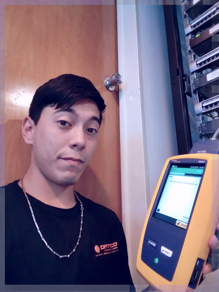

BRAIAN LEONARDO CANO

Datos personales
Dirección
Vasco Núñez de Balboa CP 1759, Argentina
Número de teléfono
+541125707456
Correo electrónico
braianleonardocano@gmail.com
www.linkedin.com/in/braiicano
Portafolio
www.braiandev.com
Intereses
Idiomas
Hola mi nombre es Braian y tengo 27 años, hace 5 años me desempeño como instalador y soporte técnico en redes informáticas, brindando charlas orientativas y resolución de problemas adaptado a cada cliente en particular. Decidí emprender vuelo en la programación de forma autodidácta, leyendo libros de desarrollo de software, aplicaciones y sitios web, también investigando en plataformas como Youtube, Bootcamps, Edutin, entre otros. Aspiro a nuevos desafíos y crear soluciónes con escalabilidad, estar en constante aprendizaje para desenvolverme eficazmente en las áreas requeridas y cuestión a enfrentar.
Experiencias laborales
NextSolution (2021-actual) – desarrollador de software. Aquí desarrollé una app de gestión general, en el cual escribí parte del código a cargo del reconocimento facial y almacenamiento de datos. También creé una serie de bots de respuestas con redirección a Telegram para facilitar y automatizar pequeñas tareas, como respuestas automáticas a clientes o alertas sobre estados de servicios en servidores y webs.
Datacomm (2018-actual) – técnico de campo y soporte. Instalaciones de puestos de red y mantenimiento de las mismas, son realizados por mi grupo de trabajo, así como fusión de F.O, medición de la misma, soporte técnico de redes previamente instaladas. Empresas que tienen nuestro soporte: Laboratorio Shire, Astrazeneca, Sanofi, Coca-cola, Manaos, Nidera, Vélez Sarsfield, Fibercorp, Nestlé, Grupo Rotoplas.
TAISA (2016-2018) – técnico de campo. Con mi equipo realicé instalaciones de redes lan vía cable utp, como también su conectorizado y puesta en marcha de puestos de trabajo, instalación de tensión débil y media. Empresas que contaron con mi soporte: Casino Buenos Aires, Nidera, Marval O’Farrell Mairal, Abbott, Abbvie, Pnud, Levi’s.
Estudios y certificaciones
2021-2022 Desarrollo web (Edutin A.) - Comenzando con HTML para estructurar una web, CSS y bootstrap para diseño y estética con responsive . Actualmente cursando midlevel en Javascript, teniendo conocimientos aplicados en la creación de micrositios web y servidores.
2020-2021 Python Core (Pildorasinformaticas) – Certificación en desarrollo de aplicaciones para clientes y servidores, creación y gestión servidores, base de datos, manipulación de archivos, manejo de diferentes frameworks como Django, Flask.
2012-2014 Técnico electónico (UNM) - Completé un 65% de la carrera con materias aprobadas en orientación a redes informáticas (LAN,WAN,configuración de redes) y desarrollo de software en lenguaje C++.
2006-2012 Bachiller (E.E.I Siembra) – Título secundario orientado a relaciones públicas y ciencias de la naturaleza.
Habilidades
→ Lenguajes de programación:

→ Diseño web/responsive:
→ Gestión de base de datos:
→ Gestión de código grupal:
→ Diseño gráfico: